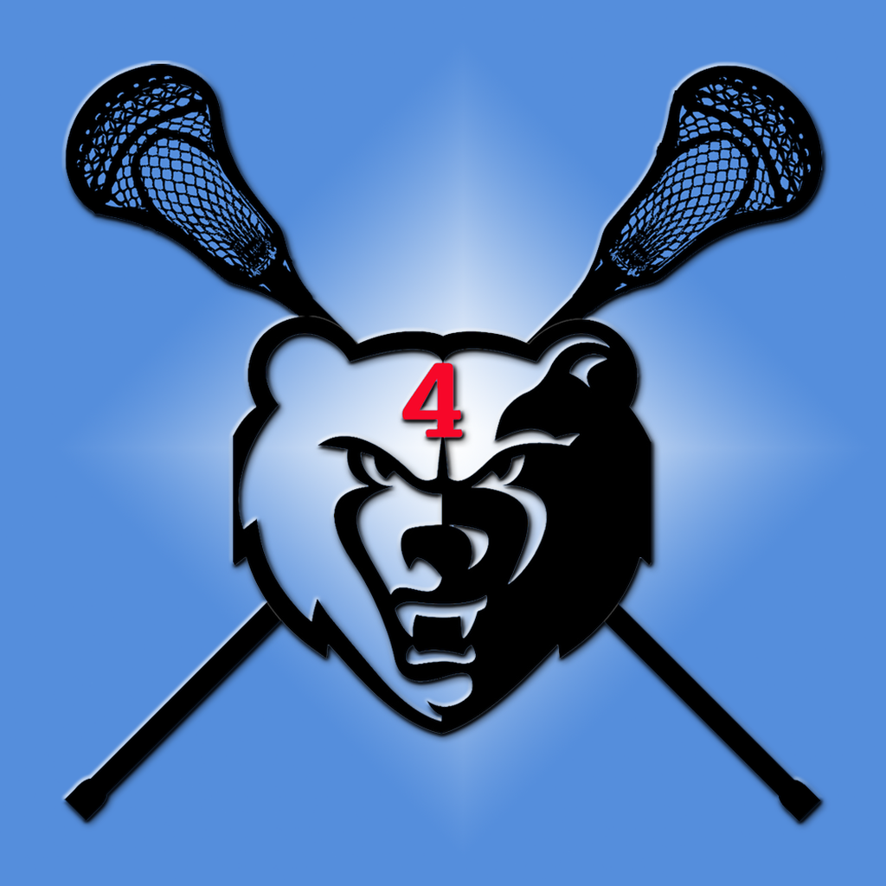
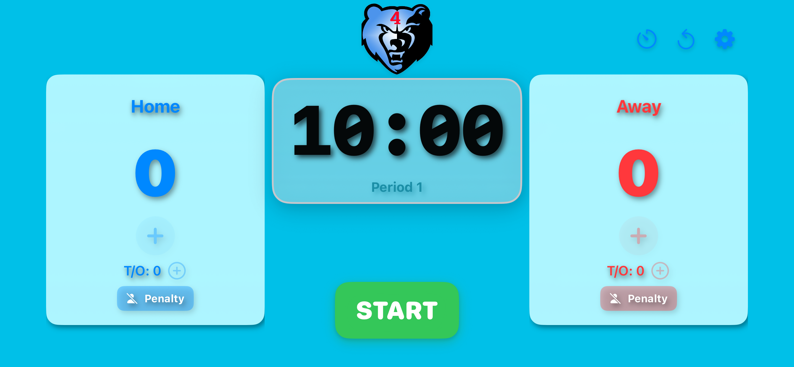

A clean, all-in-one tool for lacrosse referees and timekeepers — manage time, score, and penalties without ever leaving the main screen.

LAX Keeper is designed with one goal in mind: keep the referee focused on the game. Every control you need — clock, score, timeouts, and penalties for both teams — is right there on the main screen, bright and readable even in direct sunlight.
Configurable sounds and warnings let you adapt the app to your setup, whether you're using a physical horn or relying entirely on the app's audio cues.
High-visibility green and red countdown timer, easy to read on the brightest sunny days.
Visual and audio alerts at 30 seconds, 1 minute, and 2 minutes (4th period) remaining.
Tap the remaining time before the game starts to set a custom period length.
Continuous 5-second warning tone when the clock is paused during an active game.
Automatically advances period numbers and handles overtime seamlessly.
Quick-reference score and timeout tracking for both teams on a single screen.
Up to 4 penalties per side (Blue and Red), with optional player number and preset durations.
Horn at period end, beep when penalties expire. All sounds individually configurable.
Disables auto-lock by default so the screen stays visible throughout the game.
Clock keeps running if the app goes to background — picks up correctly when you return.
Fine-grained control over which alerts play, for setups with external audio equipment.
Optional detailed game log — scores, penalties, and periods — viewable as a report.
When I open the app, I can't adjust the score or add penalties.
Score and penalty buttons are disabled until the game has started. Press Start to begin.
How do I change the period time?
Before starting the game, tap on the remaining time display to select a new value.
Tapping the remaining time doesn't do anything.
The game has most likely already started. Period time can only be adjusted before the game begins.
How do I disable sounds?
Tap the Settings button in the lower right corner to choose which sounds to enable or disable.
How do I release or delete a penalty?
Tap on the active penalty entry. A confirmation prompt will appear before removing it.
Questions, feedback, or support? Reach out directly.
Contact Joe